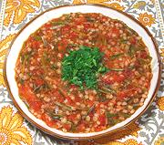

|
Spinach Stems with WheatTurkey - Bugdayli Ispanak Kökü | ||||
| Serves: Effort: Sched: DoAhead: |
4 w/rice *** 11 hrs Yes |
Spinach stems are sweeter than the leaves, and there's certainly no need to waste them. This delicious recipe takes some hours, but it's not at all difficult. | |||
|
1/3 6 5 2 1-1/4 3 1/2 1/2 1 1/2 ----- |
c oz oz cl # T T t t c --- |
Wheat Grains (1) Spinach Stems (2) Onion Garlic Tomatoes, ripe Olive Oil Lemon Juice Salt Chili Flake (4) Water -- Garnish Parsley (flat) |
I'm not sure how this dish is served in Turkey, but I've served it with Basmati rice, and that worked well. I've also used left-overs as pasta sauce which also worked well. Prep - (10 hours - 25 min work)
|